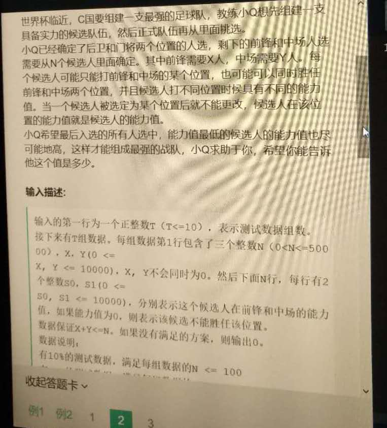
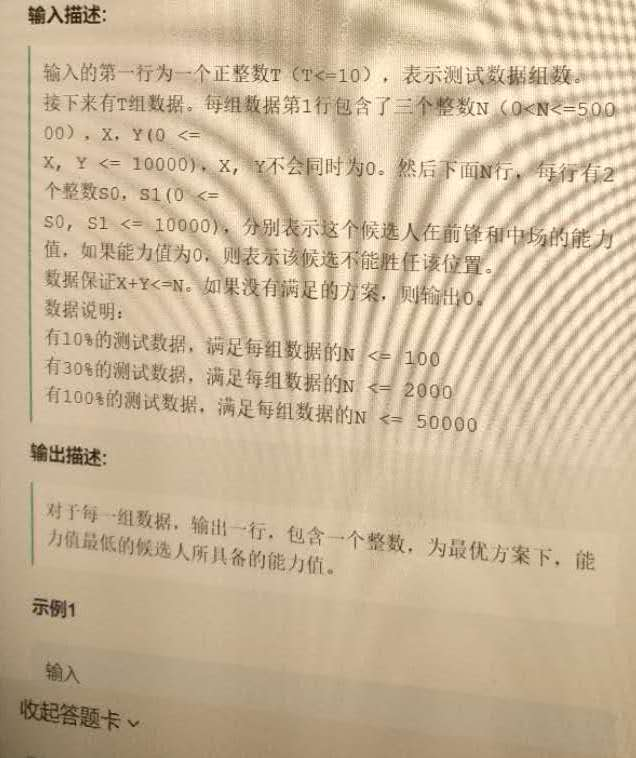
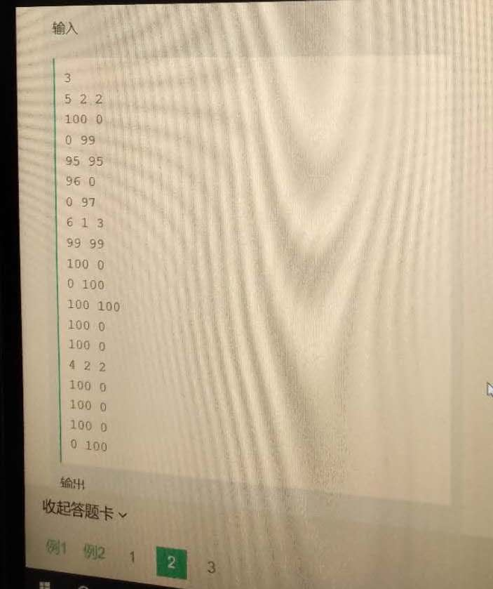
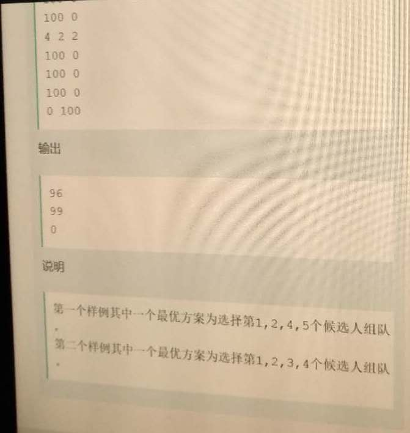

☰ 目录
[网易互娱，交叉重叠问题]20180403_选足球对手




题目的思路是，先各自选指定数目，比如X和Y个，然后重复了k个，分别从排序后的X与Y中，各自取剩下的K个，然后在这K 中取不重复的K个，来替换刚才重复的k个值。
#include <bits/stdc++.h>
using namespace std;
void dfs(int X, int Y,multimap<int,int>& xx, bool& flag,multimap<int,int>& yy, vector<int>& occupy,int& res ){
if( xx.size() < X || yy.size() < Y ){
flag = false;
return ;
}
int i =0;
int min = INT_MAX;
vector<int> vecX;
vector<int> vecX_val;
for( auto it = xx.rbegin(); it != xx.rend(); it ++ ){
// cout << it -> first << it -> second << endl;
if( i < X ){
occupy.push_back(it -> second);
if( it ->first < min ){
min = it ->first;
}
i++;
}
vecX.push_back(it -> second);
vecX_val.push_back(it -> first);
}
vector<int> vecY;
vector<int> vecY_val;
i = 0;
for( auto it = yy.rbegin(); it != yy.rend(); it ++ ){
// cout << it -> first << it -> second << endl;
if( i < Y ){
occupy.push_back(it -> second);
if( it ->first < min ){
min = it ->first;
}
i++;
}
vecY.push_back(it -> second);
vecY_val.push_back(it->first);
}
sort(occupy.begin(),occupy.end());
vector<int> chong;
for( int i=0; i< occupy.size();i++ ){
if( occupy[i] == occupy[i+1] ){
chong.push_back(occupy[i]);
}
}
int cchong = chong.size();
vector<int> xxCC;
vector<int> yyCC;
vector<int> xxCC_val;
vector<int> yyCC_val;
for( int j= X; j < X + cchong; j++ ){
if(j < vecX.size()){
xxCC.push_back(vecX[j]);
xxCC_val.push_back(vecX_val[j]);
}else{
break;
}
}
for( int j= Y; j < Y + cchong; j++ ){
if(j < vecY.size()){
yyCC.push_back(vecY[j]);
yyCC_val.push_back(vecY_val[j]);
}else{
break;
}
}
int m =0;
map<int,int> mymap; /// 其实用set就可以。
while( mymap.size() < cchong ){
if(xxCC_val.size()>0 && yyCC_val.size() > 0){
/// 这个地方应该用一个map来处理。
if( xxCC_val[0] >= yyCC_val[0] ){
if( min > xxCC_val[0] ){
min = xxCC_val[0];
}
mymap.insert(make_pair(xxCC[0],xxCC_val[0])); // 如果有重复的，下次插入相同的数时，不会改变mymap的大小，因为之前已经用过该值，会自动跳到下一个值，然后重新进行比较。
xxCC_val.erase(xxCC_val.begin());
xxCC.erase(xxCC.begin());
}else{
if( min > yyCC_val[0] ){
min = yyCC_val[0];
}
mymap.insert(make_pair(yyCC[0],yyCC_val[0]));
yyCC_val.erase(yyCC_val.begin());
yyCC.erase(yyCC.begin());
}
}else if( xxCC_val.size() > 0 && yyCC_val.size() == 0 ){
if( min > xxCC_val[0] ){
min = xxCC_val[0];
}
mymap.insert(make_pair(xxCC[0],xxCC_val[0] ));
xxCC_val.erase(xxCC_val.begin());
xxCC.erase(xxCC.begin());
}else if( xxCC_val.size() == 0 && yyCC_val.size() > 0 ){
if( min > yyCC_val[0] ){
min = yyCC_val[0];
}
mymap.insert(make_pair(yyCC[0],yyCC_val[0]));
yyCC_val.erase(yyCC_val.begin());
yyCC.erase(yyCC.begin());
}else{
flag = false;
break;
}
}
res = min;
}
//struct IN{
// int N,X,Y;
// int arr[N][2];
//};
int main(){
int zu;
cin >> zu;
vector<int> output; /// 存放每组将要输出的值
for( int i=0; i<zu; i++ ){
int N,X, Y;
cin >> N >> X >> Y;
int arr[N][2];
for(int i=0; i< N;i++){
int tmp1 , tmp2;
cin >> tmp1 >> tmp2;
arr[i][0] = tmp1;
arr[i][1] = tmp2;
}
multimap<int,int> xx;
multimap<int, int> yy;
for( int i=0; i < N; i++ ){
xx.insert(make_pair(arr[i][0],i));
}
for( int i=0; i < N; i++ ){
yy.insert(make_pair(arr[i][1],i));
}
int res;
vector<int> occupy;
bool flag = true;
dfs(X, Y,xx, flag,yy, occupy,res );
if(! flag){
output.push_back(0);
}else{
output.push_back(res );
}
}
for( auto val: output )
cout << val << endl;
return 0;
}
测试用例如下：
3
5 2 2
100 0
0 99
95 95
96 0
0 97
6 1 3
99 99
100 0
0 100
100 100
100 0
100 0
4 2 2
100 0
100 0
100 0
0 100
输出结果如下：
96
99
0